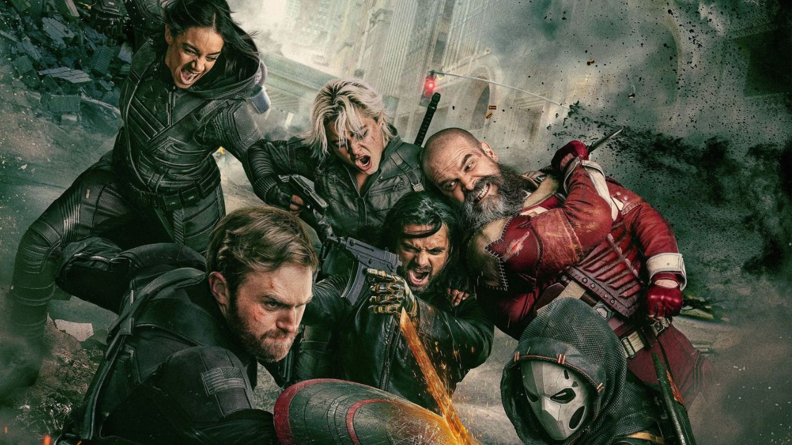

Thunderbolts (2025)

Sinopse
Em *Thunderbolts*, a Marvel reúne alguns dos personagens mais sombrios e ambíguos do MCU para formar uma equipe de operações secretas. Yelena Belova, Bucky Barnes, Red Guardian, Ghost, John Walker e Valentina Allegra de Fontaine unem forças em uma missão explosiva que desafia seus limites morais.
Elenco Principal
- Florence Pugh como Yelena Belova
- Sebastian Stan como Bucky Barnes
- David Harbour como Alexei Shostakov
- Wyatt Russell como John Walker (Agente Americano)
- Julia Louis-Dreyfus como Valentina Allegra de Fontaine
- Diretor: Jake Schreier
- Roteirista: Eric Pearson
Informações Técnicas
- Gênero: Ação, Espionagem, Super-heróis
- Estreia: 2 de maio de 2025
- Distribuição: Marvel Studios / Disney
- Classificação Indicativa: A definir
Curiosidades
- É o primeiro filme do MCU focado em anti-heróis e ex-vilões em vez de heróis tradicionais.
- O elenco reúne personagens de filmes como *Viúva Negra*, *Falcão e o Soldado Invernal*, e *Homem-Formiga e a Vespa*.
- Jake Schreier, conhecido por *Cidades de Papel*, assume seu primeiro grande projeto da Marvel.
- Há rumores de participação especial de Zemo e Taskmaster, ainda não confirmados oficialmente.
Recepção da Crítica
Thunderbolts* foi lançado em 2 de maio de 2025 e recebeu excelente resposta da crítica especializada. No Rotten Tomatoes, o filme obteve uma aprovação de 88% dos críticos (baseado em mais de 350 resenhas) e uma nota média de 7.1/10, recebendo o selo “Certified Fresh” :contentReference[oaicite:1]{index=1}.
O consenso da crítica no site destaca: "Reunindo um bando de azarões com Florence Pugh como destaque magnético, Thunderbolts* retorna de forma revigorante ao modelo testado e aprovado das melhores aventuras do MCU." :contentReference[oaicite:2]{index=2}.
No Metacritic, o filme tem uma média de 68/100 (baseado em 52 resenhas), classificado como “geralmente favorável”.
Além disso, críticos de sites como Esquire, Collider e Variety o classificaram como “um sopro de ar fresco no MCU”, elogiando sua abordagem mais contida e focada nos personagens :contentReference[oaicite:5]{index=5}.
Destaques e Temas
- Formação incomum: O time é formado por ex-assassinos, soldados renegados e agentes com passados obscuros.
- Conflito moral: Cada personagem traz um histórico de decisões difíceis, o que promete embates ideológicos intensos.
- Ação tática: Ao invés de batalhas intergalácticas, o foco é espionagem, infiltrações e operações de campo.
- Dinâmica de grupo: A falta de confiança entre os membros promete momentos de tensão e traições.